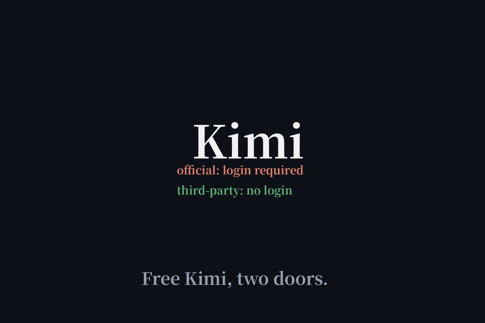

Is Kimi AI Agent Free? Two Doors, Verified (2026)
"Kimi AI agent free" keeps surfacing in related searches, and Moonshot AI is making aggressive free plays — a desktop agent, open-weights models, and third parties giving Kimi away with no login. We verified both doors: the official one and the back door. One needs an account. The other needs nothing.

| Kimi Work (official) | EaseMate (third-party) | |
|---|---|---|
| Free? | Yes — permanent free tier | Yes — 200k tokens/day |
| Account needed? | Yes — Kimi login required | No — tested anonymously |
| Open-source? | No | — (serves Kimi K2.5) |
| Platforms | macOS (Apple Silicon), Windows | Any browser |
Door 1: Kimi Work — free, but bring an account
Kimi Work is Moonshot's desktop agent for knowledge workers: parallel agent tasks, scheduled tasks, widgets, projects with 500MB storage, 15+ plugins on the permanent free tier. Real and generous — but the official guide is explicit: download, install, log in with a Kimi account. No anonymous mode, not open-source (no official repo; the one GitHub result is an unofficial community clone), and Linux isn't officially supported. It's a good free product from a real AI lab, just not a no-signup one — so it doesn't make our directory.
Door 2: EaseMate — Kimi K2.5 with no login at all
This is the one that matters for our readers. EaseMate's claim — "Kimi K2.5 is 100% free, you can even use it without logging in, 200k free tokens for all" — held up in testing. We opened the anonymous chat page, typed a message, and Kimi K2.5 answered with no login wall, no account, no card. The 200k daily tokens apply automatically. It's the rare third-party wrapper that actually delivers the no-signup experience, and it's a candidate for our directory on the next review pass.
The catches, honestly labeled
EaseMate's terms grant it a broad license over your inputs ("operating, improving, and promoting the service") — which sits uneasily next to its FAQ claim that user data is never used for training. Privacy-sensitive users should treat it like any free wrapper: convenient, but not a vault. Free credits expire in 7–30 days, purchased credits are non-refundable, and automation or limit-circumvention gets you banned. None of this is unusual; all of it is worth knowing before you paste anything sensitive.
Why this matters beyond Kimi
Google's own related question — "is there a free Chinese AI agent?" — shows English-speaking users discovering that Chinese labs (Moonshot, DeepSeek, Zhipu, MiniMax) are the most generous with free tiers right now. The pattern from our four-meanings-of-free guide holds: the official products want accounts, while the no-signup experience increasingly lives one layer out, in wrappers. Test the wrapper, read its terms, enjoy the free tokens.
FAQ
Is Kimi AI agent free?
Yes, two ways. Kimi Work (the official desktop agent) has a permanent free tier but requires a Kimi account. Alternatively, EaseMate serves Kimi K2.5 with no login at all — 200k free tokens per day, which we tested anonymously.
Does Kimi Work require an account?
Yes. Kimi's official getting-started guide states you must log in with a Kimi account to use Kimi Work. It cannot run without login, is not open-source, and supports macOS (Apple Silicon) and Windows only.
Can I use Kimi K2.5 without logging in?
Yes, via EaseMate AI. We opened its anonymous chat page, sent a message, and Kimi K2.5 responded with no login wall and no account. The site grants 200k free tokens per day automatically.
Is there a free Chinese AI agent?
Kimi (by Moonshot AI) is the most prominent free option from a Chinese AI company: a free desktop agent tier, an open-weights model family, and no-login third-party access to Kimi K2.5.